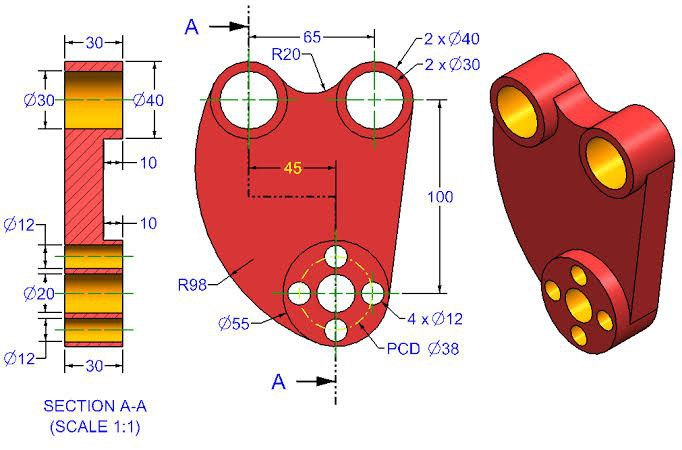
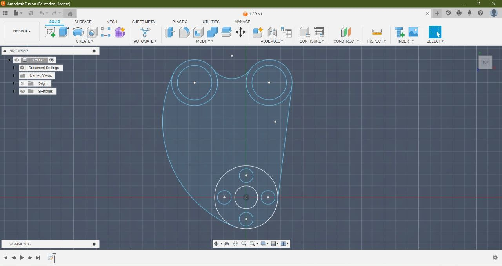

Fusion is a powerful CAD/CAM software that integrates design, engineering, and manufacturing processes in a
single platform. On day 1, you likely learned basic navigation, sketching, extruding, and creating simple 3D
models. Fusion offers parametric modeling, allowing you to easily modify designs. It also includes tools
for simulations, rendering, and collaboration. As you progress, you'll explore advanced features like
assemblies, joints, and CAM operations for machining. Mastering Fusion opens doors to efficient product
development and prototyping, essential skills for modern design and engineering.
Day 2: DESIGN


A simple 3D model in Fusion typically starts with basic geometric shapes like cubes, cylinders, or spheres.
These shapes are manipulated and combined using tools like extrude, revolve, and loft to form more complex
structures. Users can then apply materials, textures, and colors to enhance the model's appearance. Fusion
also allows for precise dimensioning and positioning of objects, enabling users to create accurate
representations of their designs. With its intuitive interface and powerful tools, Fusion empowers users
to bring their ideas to life in a three-dimensional space, whether it's for product design, prototyping, or
creative projects.
Day 3: Animated Design
Creating an engine in Fusion involves designing its various components such as cylinders, pistons,
crankshaft, and casing. Users start by sketching the basic shapes of these parts and then use extrusion,
revolve, and other modeling tools to give them volume and detail. They can also apply joints and motion
studies to simulate the engine's functionality. Fusion 's parametric modeling capabilities allow for easy
adjustments and modifications to refine the design. Additionally, users can add realistic textures and
materials to enhance the visual appearance of the engine. This process enables engineers and designers to
prototype and visualize their engine designs efficiently.
Day 4: Animated Design 2
In Fusion, crafting a lap joint is straightforward. Begin by sketching the profiles of the joint components. Extrude each profile to the desired thickness. Then, adjust the parameters to create overlapping sections where the components will connect. Ensure precise measurements for a snug fit. Fusion's parametric modeling capabilities allow for easy adjustment and refinement. The result is a robust lap joint ready for integration into your design.
Day 5: Created HYBL_Turbines_H16_Engine
Creating a HYBL H16 engine in Fusion was a meticulous process that required attention to detail and a
solid understanding of engineering principles. Starting with sketches, I drafted the engine's components,
including cylinders, pistons, crankshaft, and valves, ensuring accuracy and proper dimensions. Leveraging
Fusion 's parametric modeling capabilities, I iteratively refined each part, adjusting features and
dimensions to meet design specifications and optimize performance. Utilizing assembly tools, I meticulously
assembled the engine, ensuring proper fit and functionality of each component. Simulating motion and stress
tests helped validate the design's integrity and identify potential weaknesses. Throughout the process, I
continuously referenced technical resources and sought feedback from peers to enhance my understanding and
refine the design. Finally, I meticulously documented the assembly process and created detailed drawings to
facilitate manufacturing. The project challenged my skills in CAD modeling, problem-solving, and
engineering, culminating in a comprehensive and functional digital representation of the HYBL H16 engine.
.png)